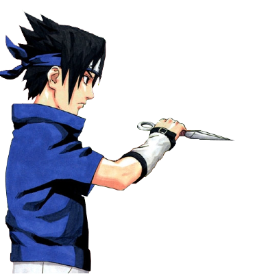
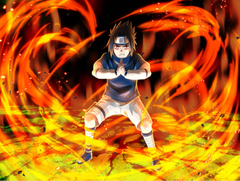
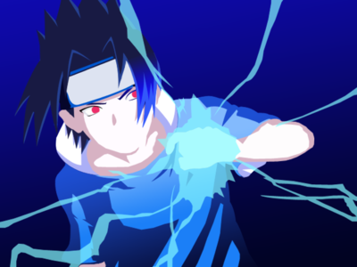
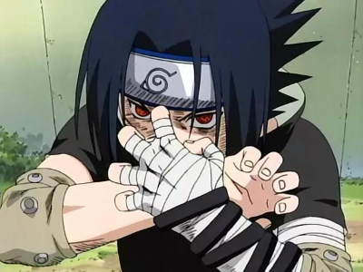
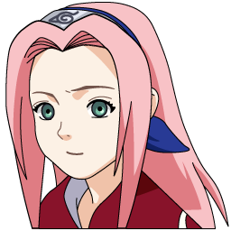

I know what you're thinking. Who's Sasuke, why am I so cool, how can I be cool like him. Long story short, you can't because I have an incredibly tragic but equally cool backstory.
So I come from the Uchiha clan and honestly, I'd be pretty jealous too. I was born more powerful than y'all ever could be.
Unfortunately, my punk ass brother decided to be really lame and kill my whole clan. I know, how did I survive, pretty simple, I'M HIM. I know the sources claims that he spared me but in reality, he saw the RAGE fill my eyes and got scared and ran away
Side note: Whoever took this video better hope I DON'T FIND HIM
After knowing all of that, are you still jealous I'm an Uchiha... I would be
Skills? Got them (NARUTO DOESN'T)
Of course being a Uchiha has some downsides, unless you're me. First, let me introduce you to my SUPER GOD EYES OF DEATH or as you weaklings call it... the sharingan
Now what does my SUPER GOD EYES OF DEATH give me. Oh you know, it lets see faster than you, it lets me perceive how weak you are AND it lets me see how little chakra you actually have. CRY ABOUT IT
But without that eye, you're nothing... says the nothing... Anyways I got loads of amazing skills, I AM one of the best kunai users in this village, because of my sharingan, I just know how to throw them better, here's a badass pic of me doing that.

I'm ok at using fire jutsu but I guess my ok is your mastery of the skill but you're trying your best I guess. Oh and the answer is yes, this skill does make me hotter

The final and best skill I have is the Chidori... omg the chidori, what is that... this bad boy of a move is basically a lightning sword, you heard that right, y'all struggling with basic weapons and I'm over here with a sword made of lightning.

The Coolest Revenge

Oh this is gonna be fun. Is what I would say if IF THE LEAF VILLAGE WOULD ACTUALLY LET ME GO. Here's the thing, I know I been training for like a year or two which doesn't sound like a lot of time but y'all forgetting that I'm a child prodigy.
I hear what y'all saying, that my brother is also a child prodigy and that he's been training for longer but here's the thing I'm just simply BETTER, gotta remember that I scared him off without a single attack. IMAGINE WHAT I WOULD DO IF I DID ATTACK.... exactly.
Just you wait tho, you're not even at my playlist called "Songs to kill my brother to", that shit is mad fire, you see soon enough
The annoyances
Kakashi, the copy ninja or as I like to call him, the one who stole a sharingan. I can't be too mad since he has been teaching me some skills that I would have learn byself but he helps me test them faster I guess. One of the few people keeping me from finding Itachi
Annoyance level 3:
At first I didn't consider her annoying, she has a few skills I just didn't want to learn but then... she made fun of Naruto and I 100% support that but she was making fun of him for being an orphan... to my face... a fellow oprhan

Annoyance level 6:
I hate him, I hate him, I hate him, I hate him I hate him, I hate him, I hate him, I hate him I hate him I hate him I hate him I hate him I hate him, I hate him, I hate him, I hate him